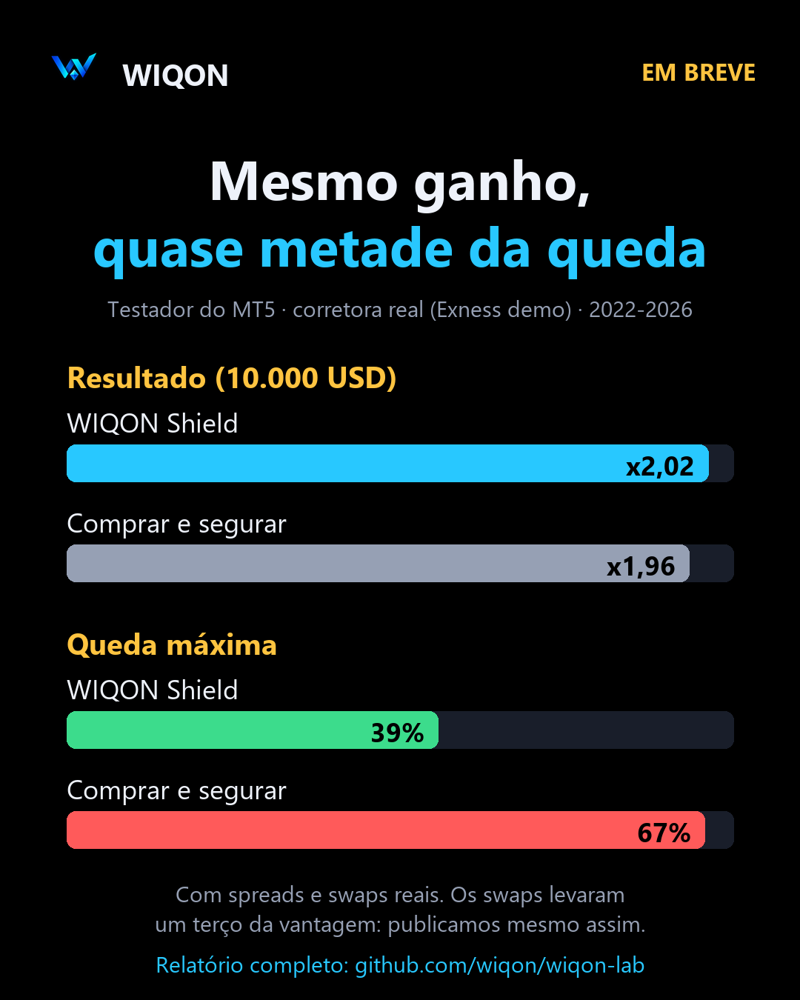

O real e o comércio de fronteira
Hoje: —.
Por que importa? Quando o real se valoriza, o comércio de Ciudad del Este ganha compradores brasileiros; quando se desvaloriza, acontece o contrário.
Notícias, dados e contexto para acompanhar mercados, trading e ativos digitais, vistos da fronteira entre o Brasil e o Paraguai. Sem sinais de compra, sem promessas: com fontes.
Carregando…

Negócios, mercados, fintech e criptoativos. Primeiro o Brasil, depois o Paraguai e a América hispânica. Cada notícia leva à fonte original.
Só cotações de instituições oficiais, com a data. Não são preços de casas de câmbio.
| Moeda | Valor | Instituição | Data |
|---|---|---|---|
| Carregando… | |||
Na fronteira, o real pesa tanto quanto o dólar. O comércio de Ciudad del Este depende da cotação do real, e o preço dos importados, da do dólar.
Casas de câmbio e bancos aplicam o próprio preço de compra e venda: use esta tabela como referência, não como preço de operação.
Não são sinais: é o que olhamos todos os dias, e por quê.
Hoje: —.
Por que importa? Quando o real se valoriza, o comércio de Ciudad del Este ganha compradores brasileiros; quando se desvaloriza, acontece o contrário.
No Brasil, as Resoluções BCB 519, 520 e 521 valem desde 1/10/2026. No Paraguai, a RG DNIT nº 47/2026 exige informar operações com criptoativos.
Por que importa? As regras definem quais plataformas podem operar e o que cada pessoa precisa declarar.
USDT e USDC são cada vez mais usados para guardar e enviar dinheiro. A Resolução BCB 521 inclui certas operações com ativos virtuais no mercado de câmbio.
Por que importa? Mudam como os dólares circulam entre países e quais controles se aplicam.
Fechamento diário frente à média de 100 dias: —.
Por que importa? É a regra que pesquisamos e operamos. Mostra se o mercado está em tendência, não para onde o preço vai.
Referência oficial do BCP hoje: —.
Por que importa? Afeta o preço dos produtos do lado paraguaio da fronteira e o turismo de compras.
Acompanhamos as decisões de juros do Copom e do Banco Central do Paraguai, e o efeito no crédito e no câmbio.
Por que importa? Com juros altos, poupar rende mais e se endividar custa mais; isso também move as moedas.
Brasil em focoAs Resoluções BCB 519 e 520 tratam da autorização, da governança e do funcionamento das prestadoras de serviços de ativos virtuais, e a 521 inclui certas operações com ativos virtuais no mercado de câmbio. As regras valem desde 1º de outubro de 2026; o envio de dados para supervisão começa em 1º de janeiro de 2027.
A RG DNIT nº 47/2026 exige uma declaração informativa anual de quem opera mais de US$ 5.000 por ano com criptoativos no Paraguai, e das plataformas que atuam no país.
“La DNIT establece obligación de informar las transacciones con criptoactivos”
Equipe WIQON · Fonte: DNIT
Testamos nosso EA com os custos reais de uma corretora: ganhou US$ 14.475 no preço e pagou US$ 4.241 em swaps. Quase um terço do ganho foi para o financiamento.
Laboratório WIQON · relatório e dados
Uma estratégia de day trade que parecia vencedora ganhou de deixar o dinheiro rendendo em só um de seis semestres. Com poucas operações, "a melhor" costuma ser sorte.
Laboratório WIQON · ver o experimento
Testamos ideias populares de trading com anos de dados e custos reais. A maioria não passa. Publicamos tudo, com o código para refazer.
| Hipótese | Tipo | Resultado | Veredito |
|---|---|---|---|
| Filtro de tendência no BTC (média 100) | HISTÓRICO | 56,6% ao ano contra 37,3% de segurar; queda 34,7% contra 76,6% (2018-2026, com taxas) | Sobrevive |
| A mesma regra no MT5 (CFD) | HISTÓRICO | x2,02 contra x1,96; queda 39% contra 67%. Os swaps levam um terço | Com ressalvas |
| Day trade EMA21 Bounce | HISTÓRICO | +0,71% em 3 anos contra +9,3% no Earn; média por operação indistinguível de zero | Não |
| Rotação de altcoins | HISTÓRICO | 33,7% ao ano com as moedas de hoje; 1,0% com as que existiam em 2021 | Não (viés) |
| Arbitragem entre 6 exchanges | MEDIÇÃO | 69 oportunidades em 24 h; quase nenhuma real | Não |
| Funding carry | HISTÓRICO | 7-10% ao ano em média, quase tudo de 2021; 2-3% em 2025-26 | Não |
Um Expert Advisor para MetaTrader 5 que aplica a regra de tendência que sobreviveu aos nossos testes: mantém a posição em BTC enquanto a tendência continua e fecha quando ela quebra. O objetivo é limitar as grandes quedas, não ganhar mais.

A versão para o Brasil está chegando. Entre na lista e receba primeiro a condição de lançamento.
Cada experimento explicado em poucos minutos, no nosso canal do YouTube.
Serviços técnicos de software e dados, com a mesma metodologia do laboratório. Não fazemos gestão de recursos de terceiros nem recomendação personalizada.
Backtest de portfólio com custos reais, validação fora da amostra e intervalos de confiança. Dizemos se tem vantagem, ou se não tem.
Ordens protegidas, Earn automático, alertas no Telegram e operação 24/7 no seu Raspberry Pi ou VPS.
Painéis com os seus dados e aulas de Python aplicado a mercados.
Gráficos e indicadores. Com o nosso link você recebe um cupom de US$ 15 para o seu próximo plano.
Onde operamos a estratégia ao vivo e de onde vêm os dados de preço desta página.
A plataforma onde roda o WIQON Shield. Gratuita.
Todo o nosso código e resultados, abertos.
Transparência: os links marcados como afiliado ou indicação nos dão uma comissão se você se cadastrar ou assinar, sem custo extra para você. Isso não muda o que publicamos.
A WIQON nasceu na fronteira entre o Brasil e o Paraguai, onde o real, o guaraní e o dólar convivem todos os dias. Pesquisamos mercados e estratégias de trading com dados reais e publicamos o que encontramos, inclusive quando o resultado é ruim.
Não vendemos sinais nem administramos dinheiro. Oferecemos informação com fontes, pesquisa aberta, software e serviços técnicos.

Não. Publicamos informação e pesquisa, e oferecemos software e serviços técnicos.
A cada 30 minutos, a partir dos RSS públicos de cada veículo ou instituição. Se uma fonte não responde, mostramos as últimas notícias dela com o horário real.
Do Banco Central do Brasil (PTAX), do Banco Central do Paraguai, do BCRA e da Superfinanciera da Colômbia (TRM), com a data publicada por cada um.
Não. É informação e análise educacional. Operar nos mercados envolve risco de perda.